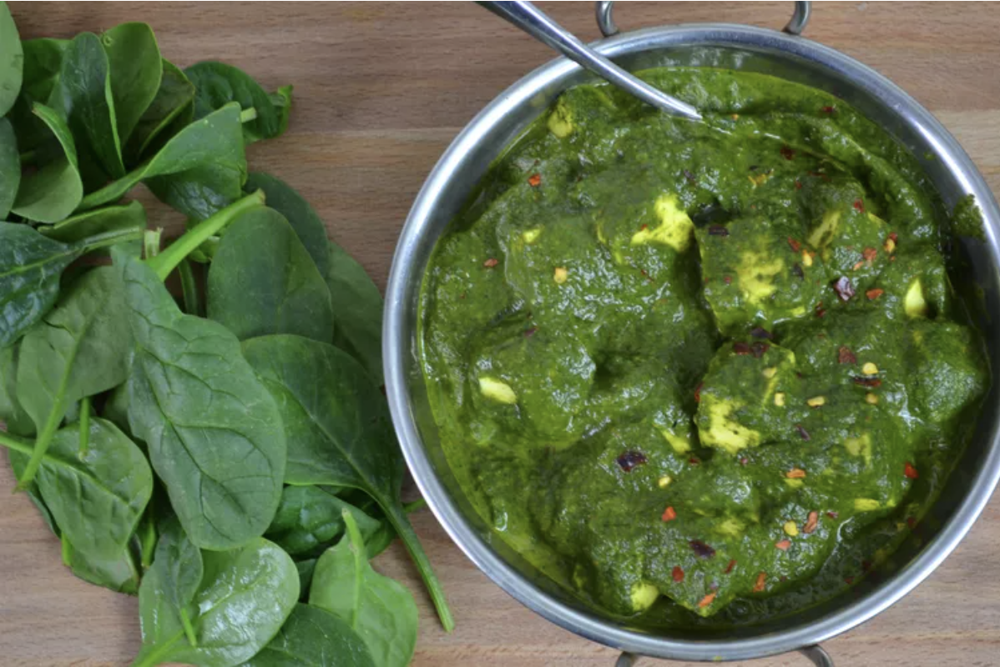

Home
Palak Paneer Recipe

Palak Paneer is a classic North Indian dish known for its vibrant green color and rich, creamy texture. It consists of tender spinach leaves (palak) cooked with paneer (Indian cottage cheese) in a flavorful gravy made from onions, tomatoes, garlic, ginger, and a blend of spices such as cumin, coriander, turmeric, and garam masala. The spinach is typically blanched and pureed to create a smooth and velvety sauce that coats the cubes of paneer, infusing them with the earthy and aromatic flavors of the spinach and spices.
Ingredients:
- Paneer (Indian cottage cheese): 250 grams, cubed
- Spinach (palak): 500 grams, washed and chopped
- Onion: 1 large, chopped
- Tomatoes: 2 medium, chopped
- Garlic: 4 cloves, minced
- Ginger: 1-inch piece, grated
- Green chilies: 2, chopped
- Vegetable oil or ghee: 3-4 tablespoons
- Cumin seeds: 1 teaspoon
- Turmeric powder: 1/2 teaspoon
- Coriander powder: 1 teaspoon
- Garam masala: 1 teaspoon
- Salt: To taste
- Fresh cream: 1/4 cup (optional)
- Kasuri methi (dried fenugreek leaves): 1 tablespoon, crushed (optional)
- Lemon juice: From 1 lemon, freshly squeezed
Cooking Steps:
- Heat oil or ghee in a pan over medium heat. Add the cumin seeds and sauté until they splutter.
- Add the chopped onions and cook until they turn translucent.
- Stir in the minced garlic, grated ginger, and chopped green chilies. Cook for another 1-2 minutes until fragrant.
- Add the chopped tomatoes and cook until they soften and break down, forming a thick paste.
- Add the chopped spinach to the pan and cook until wilted and tender.
- Once the spinach is cooked, remove the pan from heat and let the mixture cool slightly.
- Transfer the mixture to a blender and blend into a smooth puree. Return the puree to the pan.
- Add the turmeric powder, coriander powder, and salt to the spinach puree. Mix well and cook for a few minutes.
- Gently add the cubed paneer to the spinach mixture and simmer for 5-7 minutes, allowing the flavors to blend together.
- If using, stir in the fresh cream and crushed kasuri methi for added richness and flavor.
- Finish with a squeeze of fresh lemon juice for a tangy kick. Adjust seasoning if needed.
- Serve hot with rice or naan bread. Enjoy your delicious Palak Paneer!